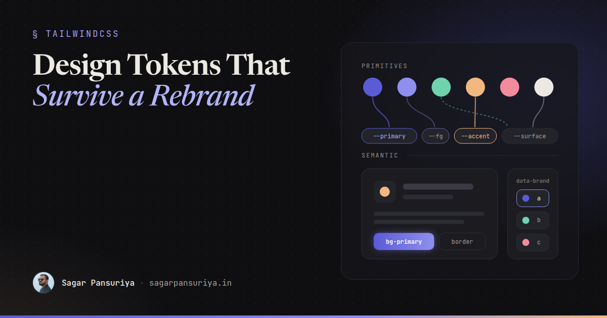
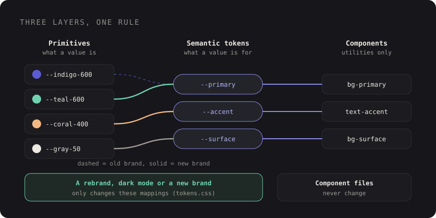

Design Tokens That Survive a Rebrand with Tailwind CSS v4


Picture the message landing in your team chat on a Tuesday: the new brand is signed off. The purple is now
a deep teal, the accent is a warm coral, corners are a little rounder, and marketing would love it live
by Friday. Somewhere in your codebase there are 400 occurrences of bg-indigo-600.
How that week goes depends almost entirely on a decision you made months ago: whether your components talk
about colours or about meaning. If every button says bg-indigo-600, you're
in for a long find-and-replace and a longer QA session. If every button says bg-primary, you
change a handful of lines in one CSS file and go get lunch.
Tailwind CSS v4 makes the second path much easier, because the theme now lives in CSS. This post walks
through a token structure I like for Tailwind v4 projects: primitive and semantic tokens, naming that
ages well, light and dark mode with CSS variables, multiple brands with data attributes, and a checklist
for moving an existing tailwind.config.js across.
What changed in v4: the theme is CSS now
In v3, your design system lived in a JavaScript object. In v4 it lives in your stylesheet, inside an
@theme block:
/* resources/css/app.css */
@import "tailwindcss";
@theme {
--color-teal-600: oklch(0.52 0.1 190);
--font-display: "Satoshi", ui-sans-serif, system-ui, sans-serif;
--radius-card: 1rem;
}Two things happen with each variable in @theme. Tailwind generates utilities from its
namespace (--color-* gives you bg-teal-600, text-teal-600 and
friends, --font-* gives you font-display, --radius-* gives you
rounded-card), and it also emits every token as a real CSS custom property on
:root. That second part is what makes theming pleasant: your tokens are available to plain
CSS, to inline styles, and to JavaScript, and they can be overridden with ordinary CSS rules.
Primitive tokens vs semantic tokens
The core idea of a rebrand-proof system is two layers of tokens with a strict rule about who can use which.
- Primitive tokens describe what a value is:
teal-600,coral-400,gray-950. They're your raw palette. They have no opinion about where they're used. - Semantic tokens describe what a value is for:
primary,surface,text-muted,border,danger. Each one points at a primitive.
The rule: components only use semantic tokens. Primitives are only referenced by the semantic layer. When the brand changes, you either swap the primitive values or repoint the semantic tokens, and no component file changes.

A rebrand then touches one layer. Dark mode is just a second mapping from semantic to primitive. A second brand is a third mapping. Components never notice.
Setting it up in Tailwind v4
Here is the structure I'd start with. Primitives are plain CSS variables, so they don't generate
utilities and nobody can reach for bg-teal-600 in a component. Semantic tokens are registered
with Tailwind so they do generate utilities.
/* resources/css/tokens.css */
/* 1. Primitives: raw values, no utilities */
:root {
--teal-500: oklch(0.6 0.11 190);
--teal-600: oklch(0.52 0.1 190);
--teal-700: oklch(0.45 0.09 190);
--coral-400: oklch(0.74 0.14 35);
--gray-50: oklch(0.98 0 0);
--gray-200: oklch(0.9 0 0);
--gray-600: oklch(0.45 0 0);
--gray-900: oklch(0.2 0 0);
--gray-950: oklch(0.14 0 0);
--white: oklch(1 0 0);
}
/* 2. Semantic mapping: light (default) */
:root {
--surface: var(--white);
--surface-raised: var(--gray-50);
--fg: var(--gray-900);
--fg-muted: var(--gray-600);
--line: var(--gray-200);
--primary: var(--teal-600);
--primary-hover: var(--teal-700);
--on-primary: var(--white);
--accent: var(--coral-400);
}Then expose the semantic layer to Tailwind in your main stylesheet:
/* resources/css/app.css */
@import "tailwindcss";
@import "./tokens.css";
@theme {
--color-*: initial; /* drop the default palette so only our tokens exist */
}
@theme inline {
--color-surface: var(--surface);
--color-surface-raised: var(--surface-raised);
--color-fg: var(--fg);
--color-fg-muted: var(--fg-muted);
--color-line: var(--line);
--color-primary: var(--primary);
--color-primary-hover: var(--primary-hover);
--color-on-primary: var(--on-primary);
--color-accent: var(--accent);
}Two details matter here.
--color-*: initial clears Tailwind's built-in colour namespace. It's
optional, but it's the single best guardrail I know: if bg-indigo-600 doesn't exist, nobody
can sneak it into a component. Note that white and black live in the same
namespace, so add them back as tokens if you use them, and check your build output once after adding
this line.
@theme inline is important when theme variables reference other variables.
Without inline, a utility like bg-primary compiles to
var(--color-primary), and --color-primary is resolved once on
:root. If you later override --primary on a nested element (a dark section, a
second brand), the utility wouldn't pick it up. With inline, the utility uses
var(--primary) directly, so overrides anywhere in the tree just work.
Components now read like this:
<button class="rounded-lg bg-primary px-4 py-2 text-on-primary hover:bg-primary-hover">
Start free trial
</button>
<div class="rounded-card border border-line bg-surface-raised p-6 text-fg">
<p class="text-fg-muted">…</p>
</div>Naming tokens so they age well
Most token systems fail at naming, not at tooling. A few rules I stick to:
- Name the role, never the colour.
--primary, not--teal.--danger, not--red. The moment a semantic token contains a hue, the next rebrand turns it into a lie. - Pair foregrounds with backgrounds. Every fill you can put text on gets an
on-partner:primary/on-primary,danger/on-danger. That's how you keep contrast correct when the brand colour flips from dark to light. - Keep states explicit.
primary-hoveris boring, but it's clearer than computing hover colours in every component, and a rebrand can tune it per brand. - Resist the long tail. Start with ten to fifteen semantic colours. Add one when a real component needs it, not when a Figma file has a new shade.
The same thinking applies beyond colour. Fonts (--font-display, --font-body),
radii (--radius-card, --radius-control) and shadows
(--shadow-raised) are brand decisions too. A rounder, softer brand is often just two radius
values.
Light and dark mode with the same tokens
Dark mode is a second semantic mapping. Nothing else changes:
/* resources/css/tokens.css */
[data-theme="dark"] {
--surface: var(--gray-950);
--surface-raised: var(--gray-900);
--fg: var(--gray-50);
--fg-muted: oklch(0.72 0 0);
--line: oklch(0.3 0 0);
--primary: var(--teal-500);
--primary-hover: var(--teal-600);
}Because components use bg-surface and text-fg, you rarely need the
dark: variant at all. When you do (an illustration that needs a different opacity, say),
point Tailwind's dark variant at the same attribute:
/* app.css */
@custom-variant dark (&:where([data-theme="dark"], [data-theme="dark"] *));If you'd rather follow the operating system preference, wrap the dark mapping in
@media (prefers-color-scheme: dark) on :root:not([data-theme="light"]), so a user
who explicitly picks light still gets light. Either way, it's one block of CSS.
Multiple brands with data attributes
Once your components only speak semantic tokens, a second brand costs almost nothing. White-label products, a sub-brand for a new product line, a partner portal: each one is just another mapping.
[data-brand="harbor"] {
--primary: oklch(0.45 0.12 250);
--primary-hover: oklch(0.4 0.12 250);
--accent: oklch(0.8 0.13 85);
}
[data-brand="harbor"][data-theme="dark"] {
--primary: oklch(0.65 0.12 250);
}Set the attribute on <html> from your Blade layout, based on a tenant, a domain or a
config value:
<html lang="en"
data-brand="{{ $tenant->brand ?? 'default' }}"
data-theme="{{ $theme ?? 'light' }}">Because of @theme inline, you can also scope a brand to part of a page. A preview panel in
an admin that shows "this is how your portal will look" is just a div with
data-brand on it.
The test for a token system is simple: can you add a brand without opening a single component file? If yes, a rebrand is a CSS change. If no, it's a project.
Back to that Tuesday message
With this structure, the rebrand from the opening looks like this: add the new teal and coral primitives,
repoint --primary, --primary-hover and --accent in the light and dark
mappings, bump --radius-card, swap the font in --font-display. Then you spend the
rest of the afternoon on the parts that genuinely need a human: checking contrast on the new
on-primary pairs, looking at charts and illustrations that hard-code colours, and updating
the logo. That's realistic for an afternoon. The 400-occurrence find-and-replace is not.
Migrating from tailwind.config.js
If you're on v3 with a JavaScript config, you don't have to do it all at once. Tailwind v4 still supports
loading a legacy config with the @config directive, so you can upgrade the toolchain first and
move tokens into CSS gradually. The official upgrade tool (npx @tailwindcss/upgrade) handles
much of the mechanical work, and it's worth running on a clean branch before doing anything by hand.
A rough mapping of the common config keys:
| v3 config | v4 @theme namespace |
|---|---|
theme.extend.colors | --color-* |
theme.extend.fontFamily | --font-* |
theme.extend.borderRadius | --radius-* |
theme.extend.boxShadow | --shadow-* |
theme.screens | --breakpoint-* |
My checklist for the move:
- Upgrade on a branch with the official tool, and keep the old config behind
@configuntil the build is green. - Inventory every colour actually used in templates. A quick
grep -roE "(bg|text|border|ring)-[a-z]+-[0-9]{2,3}" resources/viewsshows how much raw palette usage you have. - Define your primitives as plain CSS variables and your semantic tokens in
@theme inline. - Replace raw palette classes with semantic ones, component by component. Start with buttons, links, surfaces and borders; they cover most of the UI.
- Move dark mode from scattered
dark:classes into a[data-theme="dark"]mapping, and point thedarkvariant at it. - Once raw palette classes are gone, add
--color-*: initialso they can't come back. - Delete the JS config and the
@configline. - Check contrast for every background /
on-pair in both themes before you ship.
The takeaway
Tailwind v4 didn't invent design tokens, but by putting the theme in CSS it removed most of the friction
around them. Keep primitives out of components, name semantic tokens by role, use
@theme inline so overrides cascade, and treat dark mode and extra brands as more mappings
rather than more classes. Then the next "the new brand is signed off" message is a small, boring pull
request. Which is exactly what you want it to be.
Discussion